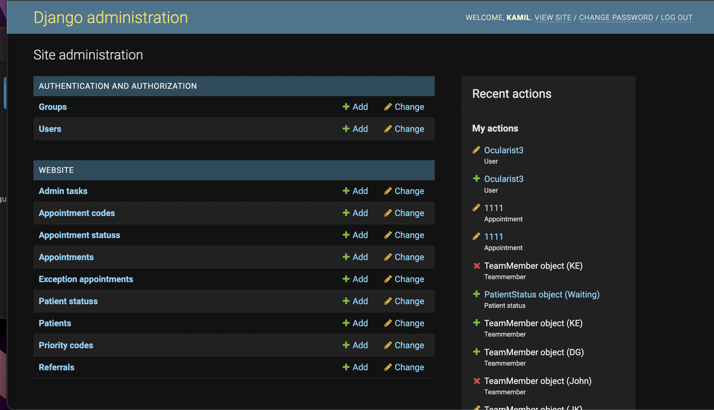
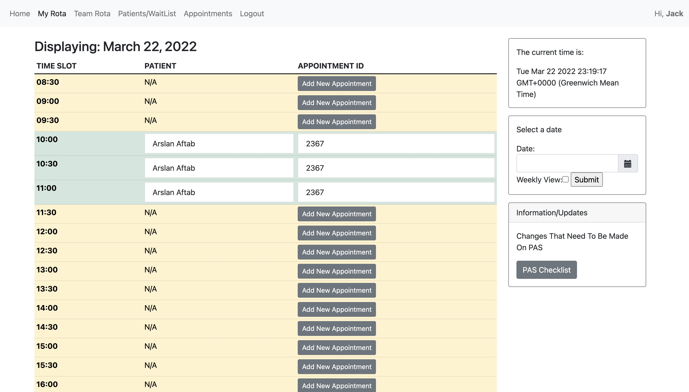

Main Tools

Python is our main programming language.Python is a high level programming language with excellent readability

Django framework and its build in functions are used for developing our website. It follows model-views-templates design pattern

Bootstrap is a CSS framework containing HTML and CSS base design templates. It is used for front-end development.

SQLite is used as our embedded database.
Implementation overview
Authentication and Admin site
Django LoginRequiredMixin is a inheritance class which only allows requests to View class from logged in users. Any unauthorised user will be redirected to log in page.
We implemented a User view class which inherit LoginRequiredMixin. All other view classes extend User view so that all HTTP requests to our application requires login.
The django build in admin site allows managing users as well as user group.
At admin.py, admin.site.register(models) functions are used to register data models to admin site so that data models can be easily modified in admin site.

Database connection
We used SQLite as our database. Django has a built-in ORM system which database tables are directly mapped to Data Model classes while a instance represents a particular record in the database.
Display timetable
1.Identify logged in user
The UserView class has a fetch_details(self,request) function which automatically fetches username and firstname for logged in users.
It is a base class and is extended by Rota View and TeamRota View.
At Rota View and Team Rota view,user object for logged in users can be identified by comparing fetched usernames.
A datetime picker is implemented using django widget library-django-bootstrap-datepicker-plus 4.0.0, jquery and django forms
for users to select a particular date or weekly view to display.
We use selected_date and weekly_view variables to store user inputs.
The timetable display current day by default therefore selected_date is set to current date.
weekly_view variable is set to false.
Both Rota and TeamRota viewclass uses HTTP GET requests.
When requested,firstly the generate_rota_appointments_ordered(selected_date,user) function will fetche all appointment objects and use django build in object.all().filter() method to get a list of
all appointments belonging to logged in users and booked at selected date. Appointments that has been canceled are excluded.
Then the generate_day_rota(rota_appointments_ordered, timeslots) function is called to matche appointment types and assign each appointment different amount of slots.
It then generate a dictionary with static time slot as keys and its corresponding appointment object as values.
The view class then renders templates and return responses.
Boostrap table is used to build html templates. The template recieves static time slots and rota data from a view class ,it then uses nested if statements and for loops to fill in informations for timetable. The timetable presents different colours for empty slots and booked slots by using bootstrap contextual classes to color table rows. Add new appointment function is implementated using a button with link to add new appointment forms. The patient name and ID are stored in timetable as a link to another templates showing more details. 
Display patient/appointment list
1.Categorize data
In WaitingList View class,patient objects are categorized to Booked Patients and Waiting Patients using Patient.objects.all().filter() function
In AppointmentView class, appointment objects are categorized to Upcoming appointments, Cancelled appointments and Past appointments using similar methods.
Both classes use HTTP GET request to perform above functions.
Templates are rendered after this.
Bootstrap Cards are used as content containers in html templates. We For loops to dynamically fill in patient's and appointment's data to corresponding cards
Update/ Add new appointments or patients
Forms
Users make changes to appointments or patients data through django model forms.
All of the django forms are written in form.py. They are then imported by View classes and sent to be rendered in templates.
User's input to the form will be stored in form attribute clean().
At view class Model Form save()method is call to creates and saves a database object or update a current data object from the data recieved in form.
Appointment Model form's method clean() checks if User inputs correct data format and raise validationError otherwise.
It also calculate start time and end time for user input appointment and check if it clashes with existing appointment.
To update a existing appointment or patients, the pk value from URLs are used to identify objects at view class.
Below is a example of update patient view class.
The parameter(instance=patient) tells the form the modify existing object patient.
Cancelling
When CancelAppointmentView is requested, appointment object is identified using pk(appointment_id)from URLs.
The appointment status of this appointment object is then set to cancelled.
Then the viewclass will redo the appointment categorize process and render the appointments.html with new data set.
It will calculate if appointment is canceled within 2 days and send notitification if so.
Delete patient functionality is implementated in similar methods.
Filters
Filter functionality for Appointment page and Patient page are implementated using django form as well.
User inputs to the forms are used to filter objects usingprocessQuery() function and templates are rendered using updated data.